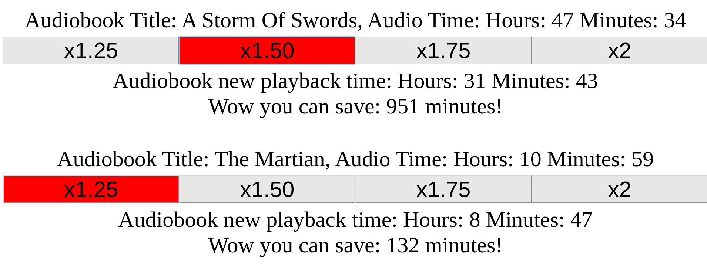

The component that I made was inspired by the desire to see the
time remaining when listening to a sped up audiobook. Most audio
software does not adjust the time remaining in the audiobook.
I set out to make the nice quick calculations to see what the total
time of an audiobook would be sped up. I thought it'd be a neat
little program. I then thought to add a feature to show how much
time you could save if you sped up the audiobook by a certain amount.
Because I needed to add another javascript effect, I thought it'd be
cool that when the user clicks on a button, then it will light
up red.
To make what I had in mind, I figured I would need buttons with speed
increase options, similar to how you would speed up the audio in
an app like audible. The options that fit best were to speed up
the audio by x1.25, x.1.5, x1.75, and x2. The math was a bit tricky
because I needed to keep track of the proper rounding in the
program. An example is that I would want to round down for the
total hours and round up for minutes, and some other similar situations.

All you have to do is click on the new speed you want.
The top shows the previous hours and minutes of the audio
length. The converted time will be displayed after the buttons.
The current clicked button will light up red so you know which
speed is currently selected. If you want to click on another
button, then the new data will be shown and the other button
will light up red.